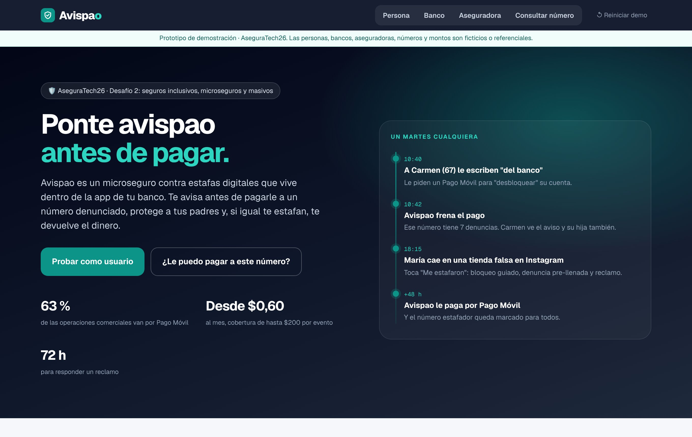
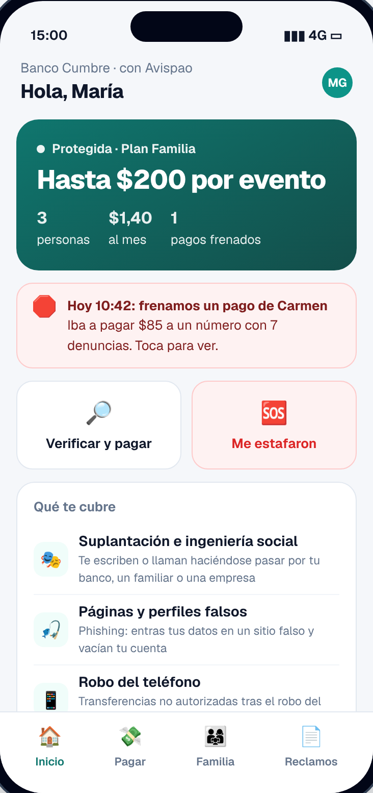
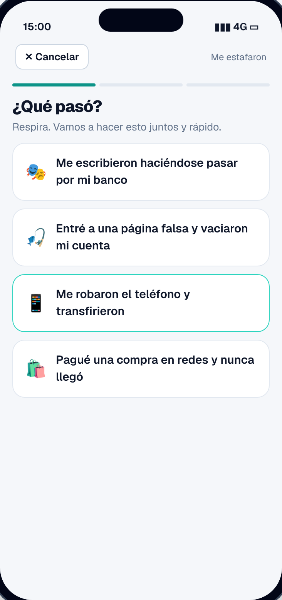
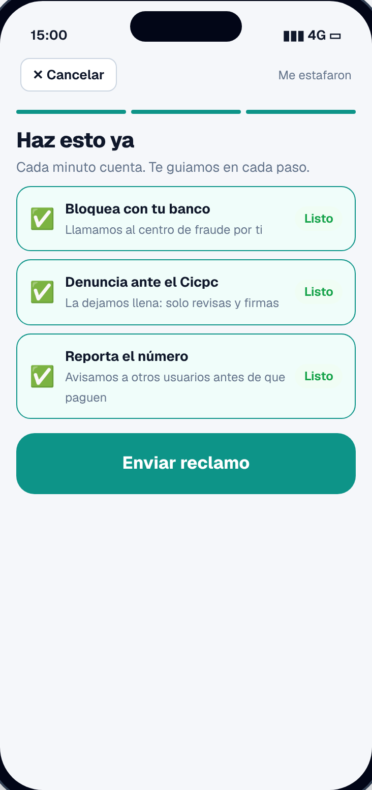
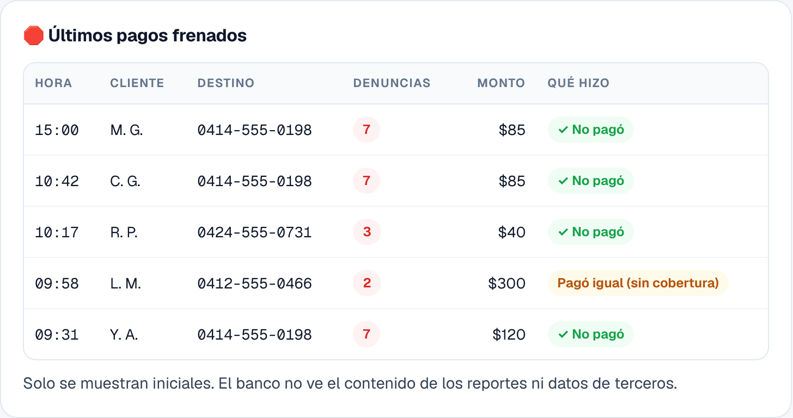
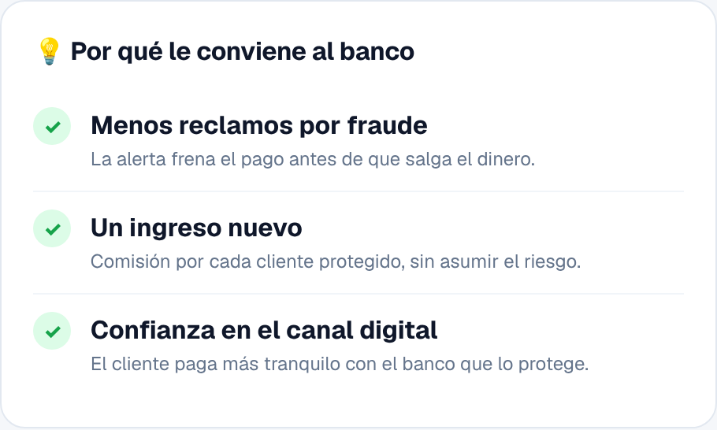
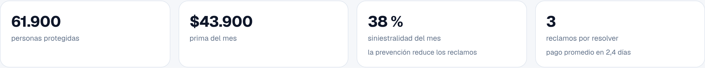
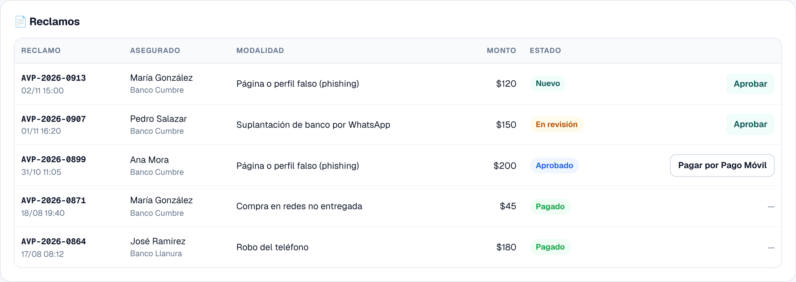
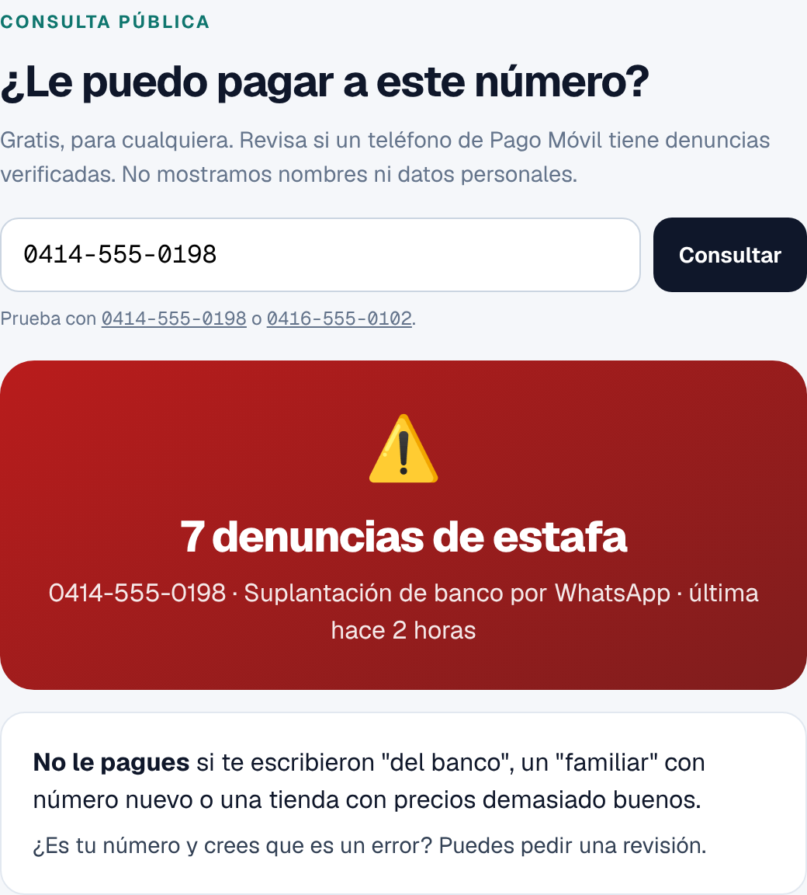

Un microseguro contra estafas digitales dentro de la app del banco: avisa antes de pagarle a un número denunciado, protege a los padres y, si igual te estafan, te devuelve el dinero.

Desafío 2: Seguros inclusivos, microseguros y masivos Desafío 3: Nuevos modelos de distribución y seguros Etapa: pre-semilla, con prototipo funcional en línea Prototipo: avispaove.vercel.app
Noviembre de 2026
Resumen ejecutivo
Protección contra estafas, por lo que cuesta un pasaje
En Venezuela casi todo se paga por Pago Móvil, y por ahí también llegan las estafas: mensajes "del banco", páginas falsas, falsos familiares y tiendas que no existen. El dinero sale en minutos y nadie lo devuelve. Avispao es un microseguro integrado en la app del banco, desde $0,60 al mes, que previene (avisa antes de pagarle a un número denunciado) y reembolsa hasta $200 por evento si la estafa ocurre igual.
🙋♀️
Para las personas
Pagar tranquilas, proteger a sus padres y tener a quién acudir si las estafan.
🏦
Para los bancos
Menos fraude, un ingreso por comisión y más confianza en su canal digital.
🏢
Para las aseguradoras
Un producto masivo nuevo, distribuido en la app, con la prevención bajando la siniestralidad.
El problema
Todo el país paga por Pago Móvil. Cuando te estafan, nadie responde.
63 %
de las operaciones comerciales van por Pago Móvil, con más de 8.500 transacciones por minuto.
El Cicpc alertó en octubre de 2026 sobre el aumento de las estafas virtuales; el phishing es el 40 % de los delitos informáticos reportados.
Cicpc · NotiFalcón; Curadas, 2026
"No es responsable"
Ante estafas por correos y enlaces falsos, el Banco de Venezuela aclaró que no responde por esas pérdidas.
El Diario, 2025
Se vende aparte
La póliza cibernética para personas que existe se contrata como producto individual, por WhatsApp con un corredor. No previene ni está en el momento del pago.
Mercantil Seguros · Atina Seguros
Avispao · AseguraTech262
La solución
Prevenir primero. Pagar si igual pasa.
Avispao vive dentro de la app del banco: el seguro está justo donde ocurre el riesgo, en el momento de pagar.
Cómo funciona
1
Se contrata en un toque: plan Individual de $0,60 al mes o plan Familia de $1,40 al mes para hasta 4 personas (referenciales), cobrados de la misma cuenta.
2
Verifica antes de pagar: si el número destino tiene denuncias verificadas, avisa con la modalidad de estafa y pide confirmar.
3
Protege a la familia: si a un familiar le frenan un pago riesgoso, el titular recibe el aviso al instante.
4
"Me estafaron": bloqueo guiado con el banco, denuncia ante el Cicpc pre-llenada, reporte del número y reclamo con respuesta en 72 horas.
Qué cubre
Modalidad
Ejemplo
Tope por evento
Suplantación e ingeniería social
"Te escribe tu banco" por WhatsApp, falso familiar en apuros
$200
Páginas y perfiles falsos
Sitio clonado del banco que vacía la cuenta
$200
Robo del teléfono
Transferencias no autorizadas tras el robo del equipo o la línea
$200
Compras en redes no entregadas
Tienda falsa en redes sociales
$80
Sin deducible, 2 eventos al año. No cubre pagos hechos a un número después de ver la alerta de Avispao y confirmar igual: así se premia la prevención y se evita el fraude del propio asegurado.
Avispao · AseguraTech263
Recorrido · Prevención
La mejor estafa es la que no ocurre
El usuario ve su protección, verifica antes de pagar y cuida a su familia desde la misma app.

Protegida. Plan, tope por evento y los pagos que Avispao frenó. Arriba, el aviso del pago frenado a la mamá.
Alerta antes de pagar. El número tiene 7 denuncias por suplantación de banco. Si paga igual, ese pago no queda cubierto.
Plan Familia. Carmen, de 67 años, iba a pagar a un estafador. El pago se frenó y su hija recibió el aviso.
Avispao · AseguraTech264
Recorrido · "Me estafaron"
Si igual pasa, no estás sola
En el peor momento, Avispao guía lo que hay que hacer en el orden correcto y deja el reclamo en marcha.

1. ¿Qué pasó? En palabras simples, sin formularios.

2 y 3. El pago y qué hacer ya. Bloqueo con el banco, denuncia pre-llenada para el Cicpc y reporte del número.
Reclamo recibido. Monto cubierto, respuesta en 72 horas y el número reportado para todos.
Cada reclamo protege a otros. El número del estafador entra a la red de alertas y el próximo usuario, de cualquier banco aliado, recibe el aviso antes de pagar.
Avispao · AseguraTech265
Recorrido · Banco
El banco distribuye, previene y gana
El banco ofrece Avispao dentro de su app y ve en tiempo real cuántos pagos riesgosos se frenaron y cuánto dinero no salió hacia estafadores.
Indicadores: clientes protegidos, pagos frenados, dinero evitado y comisión del canal (cifras de la demo).

Pagos frenados: solo iniciales; el banco no ve datos de terceros.

Por qué le conviene: menos fraude, un ingreso nuevo y más confianza.
Avispao · AseguraTech266
Recorrido · Aseguradora
Un producto masivo con la prevención de su lado
La aseguradora resuelve reclamos en un solo flujo, ve qué modalidades crecen y mantiene la red de alertas con debido proceso.

Indicadores: personas protegidas, prima, siniestralidad y reclamos por resolver.Reclamos por modalidad y red de alertas (datos de demostración), con apelaciones para quien se crea marcado por error.

Reclamos: el de María llega al instante; la aseguradora lo aprueba y lo paga por Pago Móvil.
Avispao · AseguraTech267
Viabilidad
Construido sobre la regulación venezolana
Intermediación responsable
Avispao no asume riesgo ni intermedia. El riesgo es de una aseguradora autorizada por la SUDEASEG y la colocación la hace un intermediario autorizado, en una póliza colectiva con cada banco.
Ramo: a definir con la SUDEASEG según el condicionado. En el mercado ya existen pólizas cibernéticas para personas.
Datos personales: la alerta y la consulta muestran solo cuántas denuncias tiene un número y la modalidad. Nunca nombres ni cédulas.
Debido proceso: solo cuentan reclamos aprobados y denuncias formales, y existe apelación.
Antifraude: el reclamo exige bloqueo con el banco y denuncia formal, y se cruza con el movimiento real de la cuenta.
Consulta pública
Cualquier persona, aunque no tenga Avispao, puede revisar gratis si un número de Pago Móvil tiene denuncias antes de pagar. Es la cara visible de la red y un canal de captación.
Aplicabilidad en Venezuela
Responde al medio de pago dominante y al delito que más crece.
Se distribuye en la app del banco, sin red de ventas.
Prima de centavos, accesible para cualquier usuario de Pago Móvil.

¿Le puedo pagar a este número? Resultado con denuncias verificadas.
Avispao · AseguraTech268
Modelo de negocio
Cómo crece Avispao
Fuente de ingresos
Descripción
Comisión tecnológica
Un porcentaje de la prima por operar la plataforma, la red de alertas y el flujo de reclamos.
Licencia de verificación
El banco puede usar la verificación de destino para todos sus clientes, tengan o no el seguro.
Comisión del canal (para el banco)
12 % de la prima en la demo (referencial): un ingreso nuevo sin asumir riesgo.
Cifras de la demo (referenciales): un banco con 790.000 usuarios de Pago Móvil y 6,1 % de adopción tiene 48.320 clientes protegidos; con 1.285 pagos riesgosos frenados al mes se evitan unos $96.000 en pérdidas.
Hoja de ruta
Fase
Qué
Hoy
Prototipo en línea: app del usuario, panel del banco, panel de la aseguradora y consulta pública.
0–3 meses
Validación con 1 banco y 1 aseguradora; condicionado y reglas de la red de alertas.
3–6 meses
Piloto dentro de la app de un banco, con verificación de destino y plan Familia.
6–12 meses
Más bancos en la red; canal por WhatsApp para quien no usa app.
12+ meses
Versión para emprendedores y pequeños comercios.
Métricas del piloto
Adopción sobre los usuarios de Pago Móvil del banco
Pagos frenados, dinero evitado y % de alertas que terminan en "no pagar"
Tiempo de respuesta y de pago de reclamos; siniestralidad
Apelaciones resueltas en la red de alertas
Avispao · AseguraTech269
Estado actual
Un prototipo que ya se puede probar
El prototipo está en línea en avispaove.vercel.app. Lo que se hace como usuario aparece en los paneles del banco y de la aseguradora.
Qué está construido
Vista
Funcionalidades
Persona
Estado de protección, verificación del destinatario antes de pagar, plan Familia con avisos, "Me estafaron" en 3 pasos y seguimiento de reclamos.
Banco
Clientes protegidos, pagos frenados en vivo, dinero evitado, comisión del canal, altas por semana e integración por API.
Aseguradora
Personas protegidas, prima, siniestralidad, reclamos por modalidad, red de alertas con apelaciones, aprobación y pago de reclamos.
Consulta pública
Revisión gratuita de un número: denuncias verificadas y modalidad, sin datos personales.
Personas, bancos, aseguradoras, números y montos del prototipo son ficticios o referenciales. Las cifras deben validarse con datos reales de un banco aliado.
Fuentes
Pago Móvil, 63 % de las operaciones y 8.500 transacciones por minuto (Cavecom-e): CriptoNoticias; Finanzas Digital (2026).
Cicpc, aumento de estafas virtuales y cuentas prestadas (octubre de 2026): NotiFalcón.
Phishing, 40 % de los delitos informáticos reportados según el Cicpc: Curadas (2026).
Banco de Venezuela no responde por pérdidas de estafas por correo: El Diario (2025).
Póliza Cyber Personas de Mercantil Seguros: Atina Seguros.